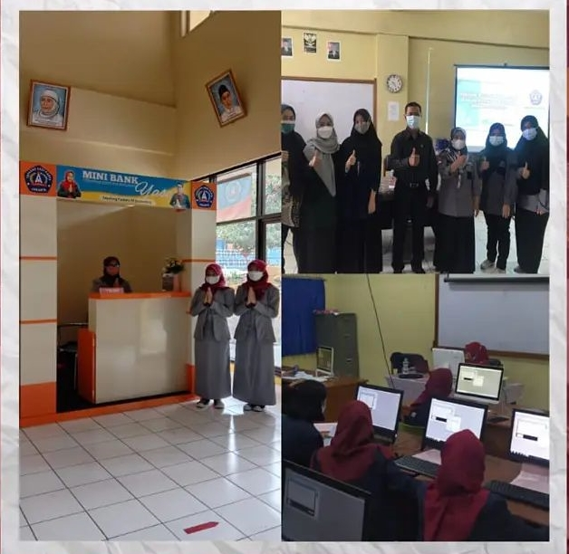

1 lab Akuntansi
kalkulator
komputer
free wifi
ac
printer
whiteboard
proyektor
Kompetensi Keahlian Akuntansi SMK Yadika Soreang bertujuan agar siswa dapat mengetahui Akuntansi baik untuk perusahaan jasa, perusahaan dagang, dan perusahaan manufaktur. Siswa kompetensi Keahlian Akuntansi diharapkan dapat melakukan Siklus Akuntansi minimal bagi dirinya sendiri dan perusahaan pada umumnya dan sekaligus mampu menerapkan Sistem Perpajakan di Indonesia
1. Pencatatan (Recording)
2. Penggolongan (Classifying)
3. Peringkasan (Sumarizing)
4. Pelaporan (Presenting)